Kalashnikov assaults rifles on older flags, emblems and stamps
Change must come through the barel of a gun
Mao ZedongThe AK-47, officially known as the Avtomat Kalashnikova (Russian: Автомат Калашникова, lit. 'Kalashnikov's automatic [rifle]'; also known as the Kalashnikov or just AK), is a gas-operated assault rifle that is chambered for the 7.62×39mm cartridge. Developed in the Soviet Union by Russian small-arms designer Mikhail Kalashnikov, it is the originating firearm of the Kalashnikov (or "AK") family of rifles. After more than eight decades since its creation, the AK-47 model and its variants remain one of the most popular and widely used firearms in the world.
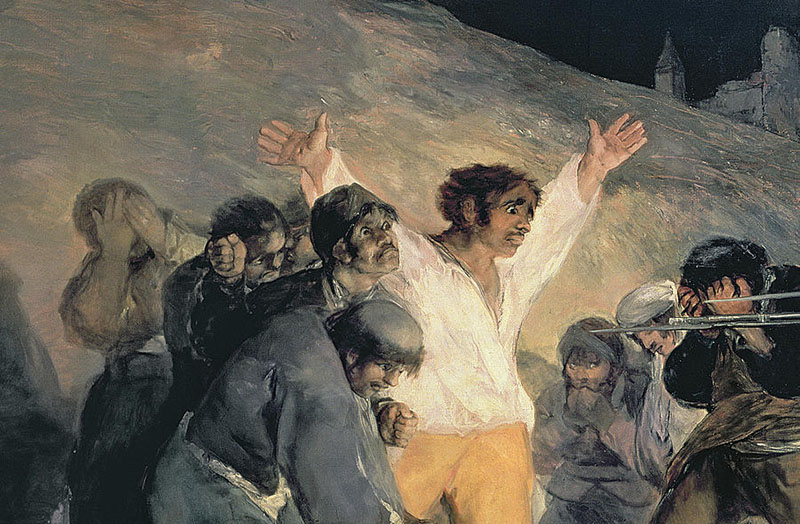
Execution of the defenders of Madrid. Francisco Jose de Goya y LucientesThe model and its variants owe their global popularity to their reliability under harsh conditions, low production cost (compared to contemporary weapons), availability in virtually every geographic region, and ease of use. The AK has been manufactured in many countries and has seen service with armed forces as well as irregular forces and insurgencies throughout the world. As of 2004, "of the estimated 500 million firearms worldwide, approximately 100 million belong to the Kalashnikov family, three-quarters of which are AK-47s".
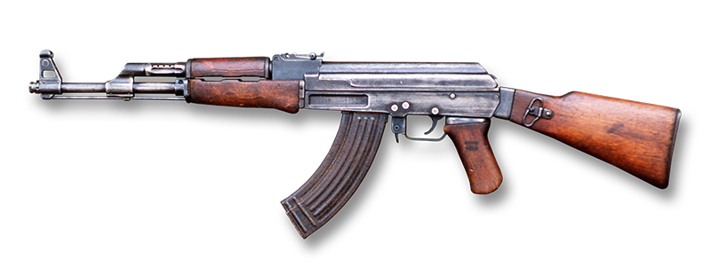
Source: https://en.wikipedia.org/wiki/AK-47
The Soviet Union used conventional arms supplies to try to achieve its own political, military–strategic and economic goals. Political goals were the dominant factor when the decision to export conventional arms was taken.
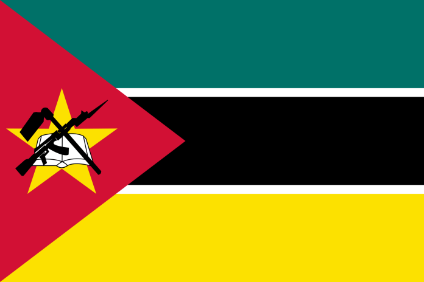
Mozambique FlagThe national emblem of Mozambique was adopted in 1990 in the Constitution of Mozambique article 194. The article clearly states the design and meaning of the device. It shows a gear wheel , bordered by corn stalks and sugarcane . In the middle there is a red sun over a map of Mozambique in green, and blue waves, an AK-47 crossed with a hoe, and a book. The wreath is tied with a ribbon bearing the name of the country. The emblem is rendered in a socialist heraldry style similar to those used by the republics of the Soviet Union.
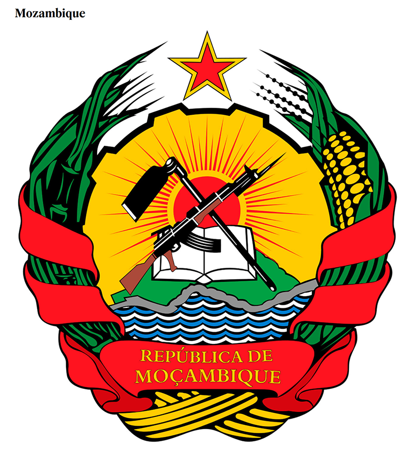
Coat of Arms of MozambiqueAccount was taken of the following considerations: (a) the socio-political system of the customer state; (b) the coalition of states to which the customer belonged; (c) the purposes for which the conventional arms were sought;
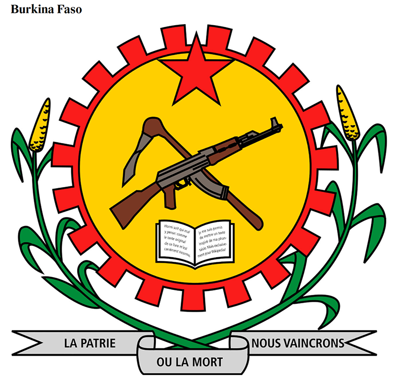
Coat of Arms of Burkina Faso. Homeland or death. We will win.(d) the commitment of the customer state to maintain a certain political regime in the country; (e) the desire of the country to draw closer to the socialist system; and (f) the possibility of aggressive action by that country against other countries of the socialist system, those friendly to the Soviet Union or those tied to it by peace treaties.
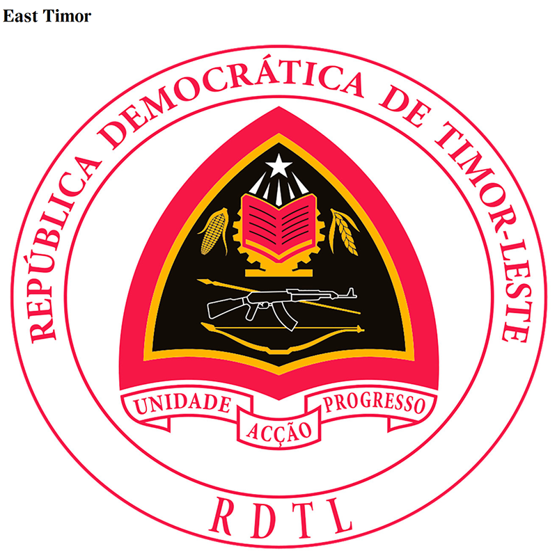
Coat of Arms of East Timor. Unity Action ProgressIn particular, it was considered whether the country would continue to adhere to a political course that satisfied the Soviet Union and the countries of the socialist community. In other words, the customer countries were evaluated from the standpoint of their political orientation. Special attention was focused on countries going through profound socio-economic change. The requests of these countries for conventional arms supplies were considered with regard to the role, place and standing of the country in the overall world political process.
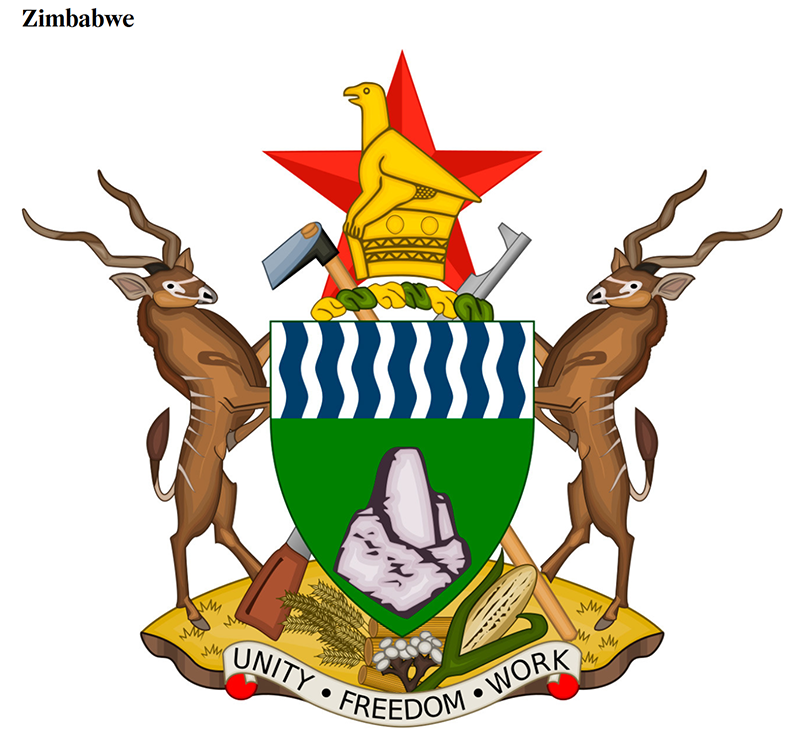
Coat of Arms of ZimbabweIn decisions about conventional arms exports, preference was given to countries which adopted a socialist orientation, took an anti-imperialist attitude or were struggling for political and economic independence and the overthrow of dictatorships. Military supplies were of major importance for penetrating the political and ideological structures of many countries, winning new political allies and, in this way, providing support to the Soviet Union in the United Nations and other international organizations.
Source: https://www.sipri.org/sites/default/files/files/books/SIPRI98An/SIPRI98An03.pdf
And now back to stamps! I will start with the Mozambique 2015 sheet dedicated to 70th anniversary of the United Nations. Our "friend" Kalashnikov appears on the stamp situated on the bottom right, two times, as well on the FLAG as on the COAT OF ARMS. "Strong UNO. Better World." sounds ironical in this context...
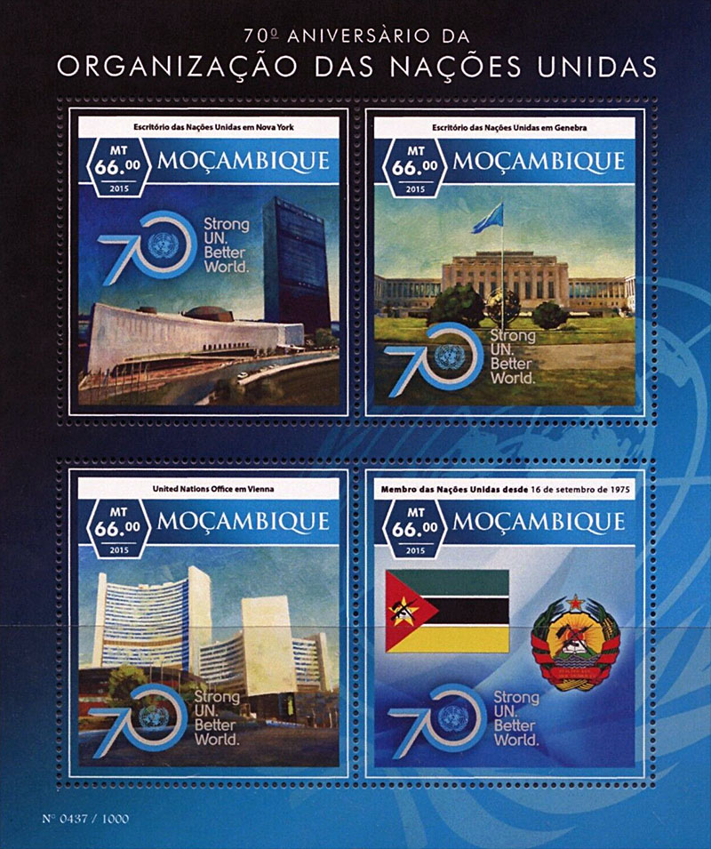
See the inspirer of the "World for Peace" movement, the USSR, with a stamp issued in 1987 and dedicated to Mozambique and its "liberation" struggle. It is Sc 5571a, showing a fighter, and Flags of Mozambique and USSR. The stamps are inscribed"25 years of the Front of Liberation of Mozambique" and "10 years of Mozambique Friendship and Cooperation between USSR and the People Republic of Mozambique". The fighter should actually hold a Kalashnikov with his fist...
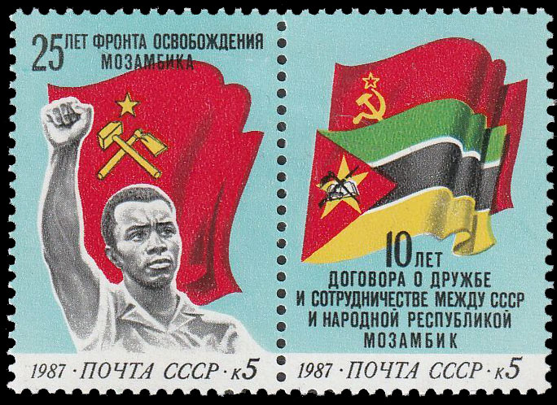
The United Nations show "solidarity" with the fight of the Mozambique's people by displaying the Kalashnikov flag on a stamp, issued in 1982:
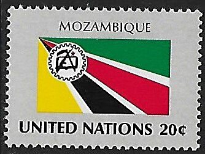
A FDC with four of such stamps is cancelled by the UNO postal administration in Geneva on Sept 24, 1982::
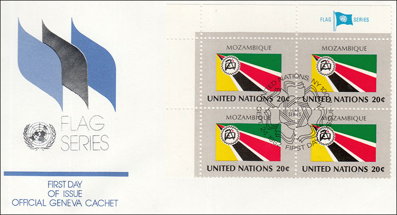
An impressive and effective contribution to peace by the now defunct USSR, by Mozambique and the United Nations...
Do you think that those ideas are dead? Take a look at the poster of 2022 shown below and wonder.
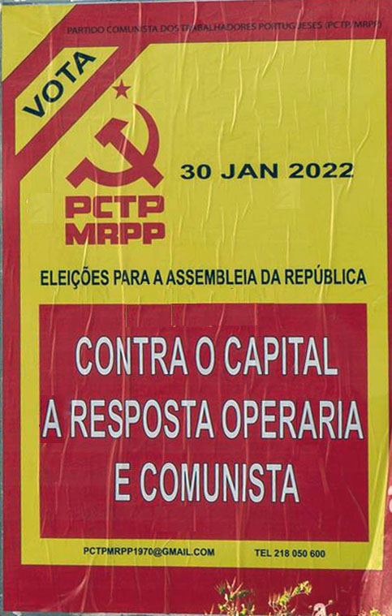
On it it is written: "Elections for the Parliament of the Republic" and "Against Capital. The answer of Workers and Communists." The MRPP is the "Movimento Reorganizativo do Partido do Proletariado" (Reorganization Movement of the Party of the Proletariat - founded in 1970) and renamed PCTP - "Portuguese Workers' Communist Party" in 1976. It holds a Maoist political orientation.
|
|
Created: Jan. 9, 2024.
Revised:
Jan. 24, 2024
. |